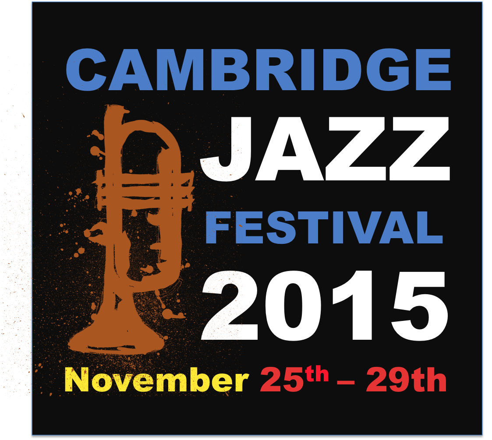

About
Artists
Venues
Support
The Cambridge Jazz Festival is a not-for-profit Community Interest Company
Our goals are:
To raise funds, publicise, and organise an annual jazz festival in and around Cambridge
To attract high quality professional jazz musicians to perform at local venues
To showcase local talent alongside headline acts
To bring together the jazz communities from the town and the universities in joint projects and performances
To promote jazz to a wider audience within the city and beyond
To celebrate the wide variety of musical styles within “jazz”
To encourage and support awareness and teaching of jazz in local schools
To provide educational workshops for both children and adults
To commission and perform new music
Cambridge Jazz Week-ends: past editions
Follow us!
Subscribe!
Contact Us